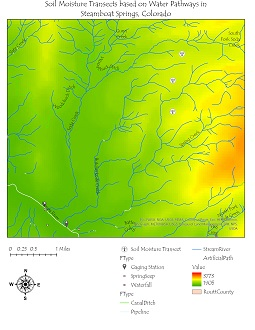

In Situ Soil Moisture Transect Locations
This Map shows the locations of three soil moisture transects I conducted in Routt National Forest, up Buffalo Pass.
The Center for Western Weather and Water Extremes (CW3E) is partnering with Yampa Valley Sustainability Council and Colorado Mountain College to implement a soil moisture network in the Upper Yampa River Basin (UYRB) aiming to better conserve and manage water. Soil Moisture has become increasingly important to study, “in the context of understanding water availability and improving water forecasts for utility managers'' (Osenga et. al, 2019). As an intern in the summer of 2021, I examined how vegetation cover and topography influence soil moisture variability and how these observations interpret water availability in the soils. “When the soil in a watershed is dry, water absorption by the soil can significantly reduce the amount of precipitation making its way into streams and rivers” (Zamora et al., 2010). The motivation of my research was, “to explore how sub basin variability in soil moisture could potentially influence where soil moisture monitoring stations are sited in catchments to best support water management decision making”. Which leads up to my research question, “How do insitu soil moisture measurements vary at the sub basin scale and what landscape-level parameters potentially influence that variability?”.